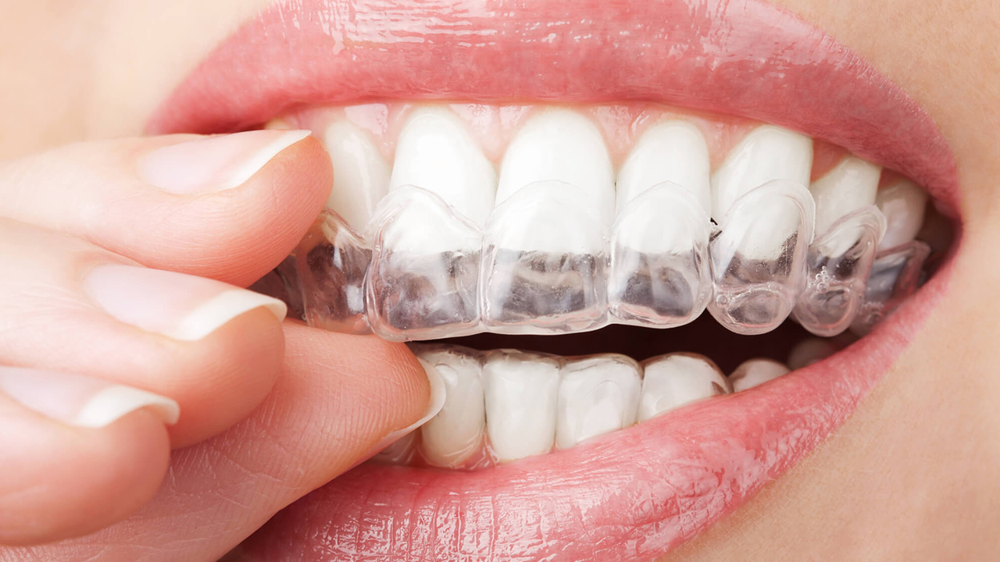

O que faz um dentista clínico geral?
Geralmente, logo depois de terminar a faculdade, é comum que os jovens dentistas escolham uma especialização para seguir e se dedicar, delimitando o campo de trabalho e concentrando os estudos em uma área mais reduzida. Mas existe também a habilitação conhecida como clínico geral, que vai exigir uma formação mais ampla e pode ser uma ótima escolha para quem está começando a carreira ou mesmo para quem prefere não se especializar.
O clínico geral costuma fazer o atendimento mais primário dos pacientes, sendo encarregado de encaminhá-los para outros especialistas ou, em casos mais simples, resolver o problema.
Em nossa clínica cobramos consultas presenciais pelo valor fixo de R$28 com Clínico Geral. Consultas online pelo valor fixo de R$32 em diversas especialidades. 24,90
O dentista, que aqui será chamado de clínico geral para evitar confusão, é o indivíduo que se formou em odontologia e que tem por objetivo cuidar da boca, além de tratar dos dentes e dos ossos da face. Pode-se afirmar que esse profissional presta atendimento em situações mais gerais, menos específicas. No entanto, esse fator não permite achar que essa tarefa seja fácil. Bichectomia, Cirurgias corretivas (a fim de melhorar o posicionamento dos dentes ou ossos na boca), Extração de dentes, Implante de próteses dentárias Procedimentos emergenciais e Tratamento de cânceres bucais.
A consulta com clínico geral deve ser feita principalmente quando não há indícios sobre as causas de um problema. Por exemplo, se você for a um posto de saúde com febre e náuseas, esses sintomas podem indicar desde infecções virais e bacterianas até problemas intestinais ou neurológicos.
Para marcar a sua consulta, a clínica está aberta das 8:00 ás 11:45 e das 13:30 ás 19:30, ou entre em contato pelo número 54 3444-5639.
Continue navegando

Endodontia
Saiba mais
Peridontia
Saiba mais
Clínica Geral

Implante Dentário
Saiba mais

Clareamento
Saiba mais